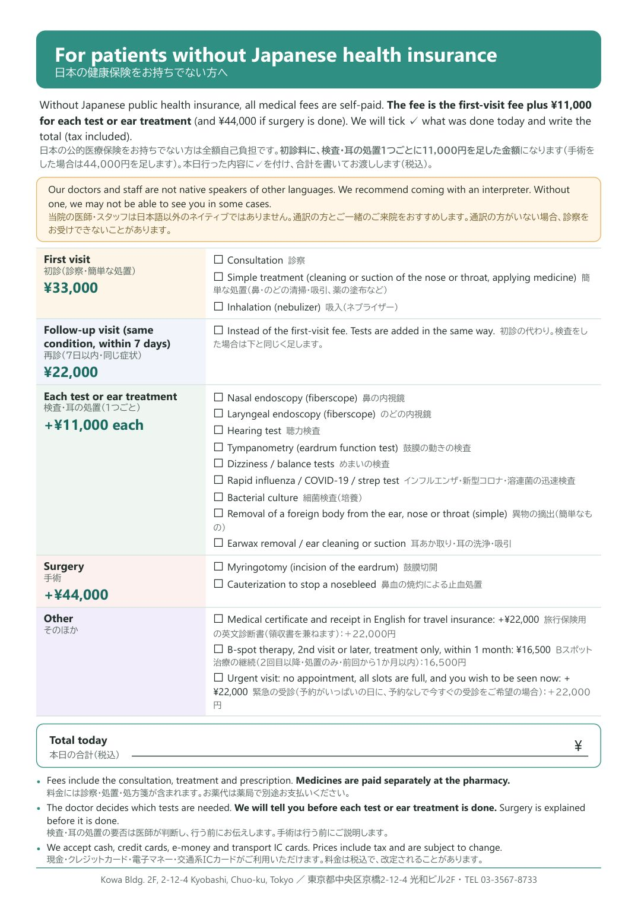

Welcome. Please check in here.
It takes about one minute. 受付はこちらです。
Welcome
This tablet will help you during your visit today. Tap a button below.
Please return this tablet to the reception when you pay.
Our staff are not native English speakers. If you have a question or a request, tap “Talk to our staff”. You can send it to the reception from your seat.
Your visit today
- Check-in at the receptionPlease fill in the form. Without Japanese insurance, please read the fee guide.
- Wait in the waiting roomWe will call your name. Keep this tablet with you.
- Tests (if needed)We will tell you before each test. You can watch a video about it here.
- See the doctorThe doctor will explain your condition and treatment.
- PaymentWait for your payment slip. Then pay and return this tablet.
- Pharmacy (if you get a prescription)Take your prescription to a pharmacy. Medicine is paid separately there.
Video: your visit
Tests & treatments
Tap a video. Each one is about one minute, with English subtitles.
Tests
Conditions & treatments
Questions
Tap a question to see the answer. Tap 🔊 to listen.
Can't find your question? Go to “Talk to our staff”.
Fees
For patients without Japanese health insurance. All fees include tax. The doctor decides which tests are needed, and we will tell you before each test or ear treatment is done.

Video: fees
Talk to our staff
Or show a message to a staff member nearby
Tap a message. It will be shown in large Japanese.
Send a message to our staff
Choose a message, or write your own in any language. It will be sent to the reception in Japanese.
スタッフ用：英語の一言
押すと英語が大きく出て、英語で読み上げます。患者さんに画面を見せてください。